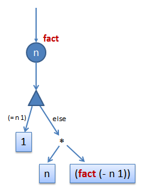
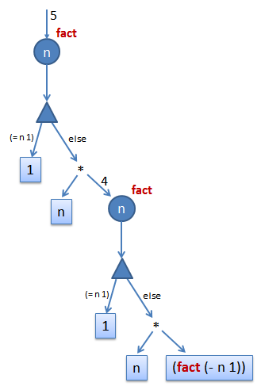

What is a Program?By Yin WangIn this article I hope to explore possible answers to the question "What is a program?" from a programming language's perspective. This is in contrast to a usual "machine perspective". While the machine perspective may be broader, it is often more complicated (think of Turing machines). A programming language's perspective may be simpler, but it may be overly simplistic to the degree that it doesn't capture everything that the machine perspective has to offer. Later revisions may provide more insights into this matter. Are programs necessary for computation?Programs are usually what we use for computation, but are they necessary? I think the answer is No. To understand this, first let us answer the question "What is computation?" Simply put, computation is the many ways we simulate the world. This simulation could happen in the brain, in a crystal ball, in an electronic circuit, in a chemical reactor, or more. Originally, the purpose of this simulation is to predict the future (or at least the near future) for our advantage for survival. This goal is evident in the use of computation in meteorology, particle physics, biology etc. We want to know how the real world changes with given conditions and time, so we model the world with data structures in a computer, and run simulations on those "models". To be practical, we have to ignore many aspects of the real world, so the models we have are only abstractions of it. The models must reflect accurately the aspects that we care about, without over-assumptions, that is, constraints or conditions that doesn't really exist in the real world. Errors may be tolerable, but should be well-controlled. This is why computation is more and more important in sciences, because it lets us predict the future. In today's sciences, it also lets us experiment with our "guesses" of how the universe was "built". There are many other aspects of computation, for example as an information processing tool. Information is also part of the world, so we are actually using a computer for the same purpose: manipulating the world's model. Now let's come back to our first question, do we need programs for computation? I said that it was not necessary. The reason is that a "computer" can be a special-purpose computer with only one specific goal, for example calculating the result of 2 + 3. Such simple circuit may be built using a few logic gates with fixed inputs on the pins. We will get the output as electric signals from the output pins. So you see, a program is not really necessary for computation. We can build any kind of circuit we want it be, electrical, chemical or biological, as long as they reflect the real world, and then we can utilize the physical characteristics of the circuit to do our "computation". Programs are dynamic circuitsWhy do most computers run programs then? This is because building circuits is time-consuming and usually very expensive, so we want to build a circuit once and use it for many purposes. We call those circuits which can serve more than one purpose general-purpose computers. For example, in addition to calculating 2 + 3, they can also calculate 3 + 4, 2 - 15, 124 * 45, etc and can do more complicated things. So you see, those general-purpose computers have the functionalities of many, even a whole class of, special-purpose computers. In order to achieve this, a general-purpose computer simulates the special-purpose computers. That is, it "pretends" to be one of them at a given time. Now the question is, how does the general-purpose computer know which special-purpose computer to simulate? The answer is to use a data structure -- a description of a special-purpose computer which the general-purpose computer can manipulate. This data structure is normally called a program. The general-purpose computer is usually called the interpreter of the program. Once the interpreter gets a program as input, it behaves like the program. Since a special-purpose computer is a circuit, a program is then a description of a circuit. This is evident from the following example Scheme program which computes the factorial of the input number. As we can see, there is an input, and the output is either 1or (* n (fact (- n 1)))， depending on whether "n" is 0. Notice that "fact" refers to the function itself. If we build a circuit for computing this function, it would look like:  This circuit can be physically implemented using electronic devices. I haven't drawn all the details. You must think of those four n's as connected together by wires, and have the same values at any time. The triangular shapes a demultiplexer (demux), it tests whether "n" is equal to one, and then decides which output to activate. The demux is common to all programming languages, sometimes they appear as conditional statements (if, cond, ...), sometimes they appear as pattern matching, but in essence they are all the same thing. The reason of using them is simply because different values of input can come in, and we need to distinguish them -- we look at them and do different things according to their values. But notice that this is not a usual circuit. It is a "dynamic circuit". The bottom part denoted by (fact (- n 1))is not an end point. It is an instantiation of the same circuit by passing (- n 1)as input. So the circuit is growing as we compute. For example, when we pass in the initial value 5, we end up with a circuit like the following after one expansion of the endpoint:  Interpreters are circuit simulatorsSo now you may wonder whether interpreters are circuit simulators. In fact they are. If you look at a simple interpreter, you will find that it is using some tricks to simulate the signal-flow in a circuit. Usually the interpreters are recursive, they traverse the sub-components and in the meanwhile carrying signal values in what we call an environment or symbol table, so that they may know the values of each wire that may be used. Sometimes the wires in both a component and its sub-component can be labeled with the same name, if the wires in the component don't also go into the sub-component. This is called "shadowing". But we should remember at all times that the wires that are labeled by the same name are in fact distinct wires and have absolutely nothing to do with each other. We use the same names just for our notational convenience. If we don't reuse names, we may run out of unique names very soon in large circuits. Lexical Scoping v.s. Dynamic ScopingWe can also explain why the notion of lexical scoping (or static scoping) is more reasonable than dynamic scoping. This because when we write the definition of a function that is later used as a value, the free variables inside the function refer to the names in an outer scope of the definition site. When we pass the function around as a value, those free variables (as electronic pins) should still be "connected" to their original wires. If we use dynamic scoping, those variables may be reconnected to a wire labeled with the same name but at the call site. This is not correct, because those two wires with the same name are different wires, and thus have completely different meanings. Our intention is probably to use the wire at the definition site because that is what we see when we write the function. We probably have no intention of connecting to a random wire with the same name somewhere else. This why programming languages should not use dynamic scoping. This intuition of a program as a circuit is very useful. It can guide us to become aware of the most important aspects of programming languages and help us become better programmers. I will talk about compilers, parallel computing, type inference, logics and theorem provers in later posts using this general framework of thinking. |